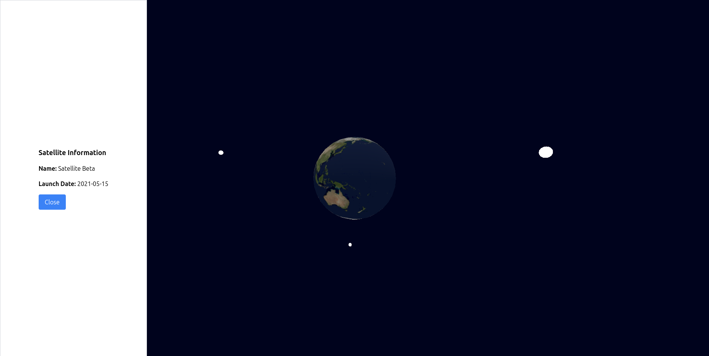

What We Achieved This Week
This is the first week of our Satellite Orbit and Event Predictor (SOEP) project, and we made significant progress. Here’s a summary of what we accomplished:
- Satellite Information Display: We have a base design for satellite data to show when a user clicks on a satellite.
- Data Storage Method: After evaluating different options for storing satellite information (DLL, file-based, or others), we opted to use files for data storage. This method offers simplicity and flexibility for our current needs.
- C++ Multi-threading: We successfully implemented multi-threading in the C++ part of the application, improving performance and ensuring smooth real-time data processing for satellite predictions.
- API Node Setup: We set up the API node to fetch data from the N2YO service, which will provide real-time satellite information that our application can process and display.
- Blog Website Creation & Deployment: We built and deployed the website to host our weekly blog, ensuring a place for regular updates on our progress.
- Rendering Decision: After reviewing the costs of using CUDA versus CPU for rendering, we decided to stick with CPU rendering. CUDA was more powerful but not cost-effective for our cloud-based setup.
- Templating Engine: We integrated a templating engine into our server to serve dynamic HTML content.
- Google Cloud Setup: We created a Google Cloud account for our project, which will serve as the platform for hosting our back-end services and managing data.
- Website Design: Finally, we designed the overall layout and structure of the website, setting the foundation for future updates and enhancements.
Here’s how our website looks so far:

Back to homepage